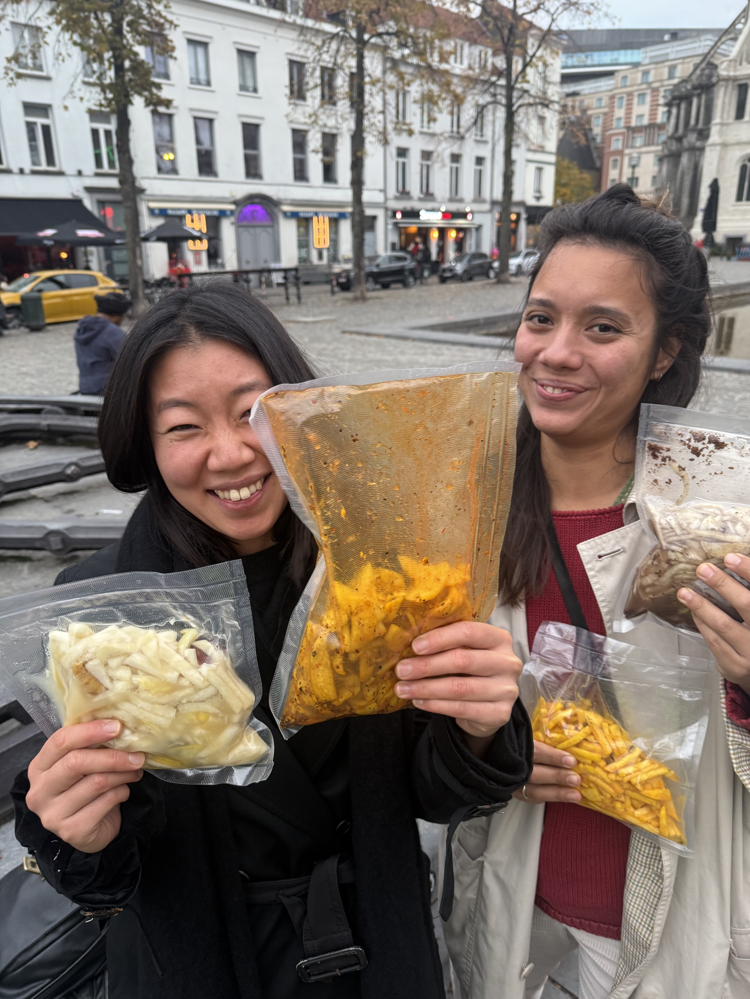

Cơm Cơm pop-up dinner
by Asli Hatipoglu & Christy Han Nguyen
Culinary artists Asli and Christy open up their collaborative kitchen to bring guests a sharing experience to get to know an exploration of taste from their Southeast Asian roots (Thailand and Vietnam) merged with their migratory background, adapting local produce as well as garden-grown herbs.
Welcome to a story telling dinner where you will have opportunity to understand complexity of shared flavors and personal histories around food and its migratory roots, adapting, changing while keeping essentials at play.
[see menu below <3 ]
Thursday& FRiday, December, 4th&5th, 2025
cahs only
19:00-21:30h
Hectolitre, 3rd floor, Rue de l'Hectolitre 3, Brussels
Accessibility: For accessibility inquiries, please contact us via direct message to arrange support.
Reserve a table using link and bring your family, friends & lovers
https://docs.google.com/forms/d/e/1FAIpQLSfbtLDd1lUErh5CGTqIrz0axDA1fKAeKA_DMfM5sZDBzuG2sQ/viewform?usp=sharing&ouid=113505875857273648765
Full menu price: 36 Euros (excluding drinks)
A selection of homebrewed fermented drinks will be available on location (cash only)
Participating Artists
Asli Hatipoglu [she/her]
Aslı Hatipoğlu (TH/TR) is an interdisciplinary artist whose social practice focuses on curating participatory dinners and installations that shed light on how culinary history and agricultural politics are changing our relationship to food. From working with micro-scale bacteria and yeasts responsible for fermentation to insects such as the domesticated silkworm, Asli critically investigates ways of relating to our environment and ourselves. Currently she has been working with the shifting narrative of an artist and a tour-guide, merging fiction and reality with story-telling in performative acts as a way to critically question today’s systems of production as a marketable tourist destination.
Asli has held events at the Hectolitre space in recent years with her project “Gustatory Sound” merging music with blindfold eating experience with Ari-Pekka Leinonen, as well as initiating pop-up dinners with other artists. Recently she has hosted Pandan pop-up dinner together with Tehani Amarasuriya.
Christy Han Nguyen[she/her]
Christy Han Nguyen (FR/VN) is a trained architect (ENSAPVS) and cook, shaped by her Vietnamese heritage. She weaves these practices together to trace what happens in the places she inhabits. Her work focuses on fermentation, which she approaches as an “architect of bacteria,” attentive to the invisible relationships linking us to our environments.
She engages with lived spaces; studios, apartments, improvised kitchens; to observe how people, materials, and other species coexist. Using what she gathers on site, she co-creates with the everyday rhythms of each place and with those who animate it.
MENU
Starters:
Phở gà
Healing broth with chicken OR seaweed mushrooms
Nems
Vietnamese traditional fried rolls with pork or wood-ear mushrooms
Lacto-fermented pickles
Homemade fermented vegetables by the chefs
Sharing plates:
Gỏi gà
Vietnamese aromatic herb salad
Som Tum
Thai papaya salad with roasted peanuts
Gai Yang
Thai spiced BBQ chicken or King oyster mushroom Nam Tok with sticky rice
Red curry
Thai homemade curry with smoked aubergine and black garlic
Kua Kling Pakchoi
Stir-fry pak choi braised with kua kling curry paste
Desert:
Che chuoi
Warm cconut milk desert with sago pearls
See you soon!!